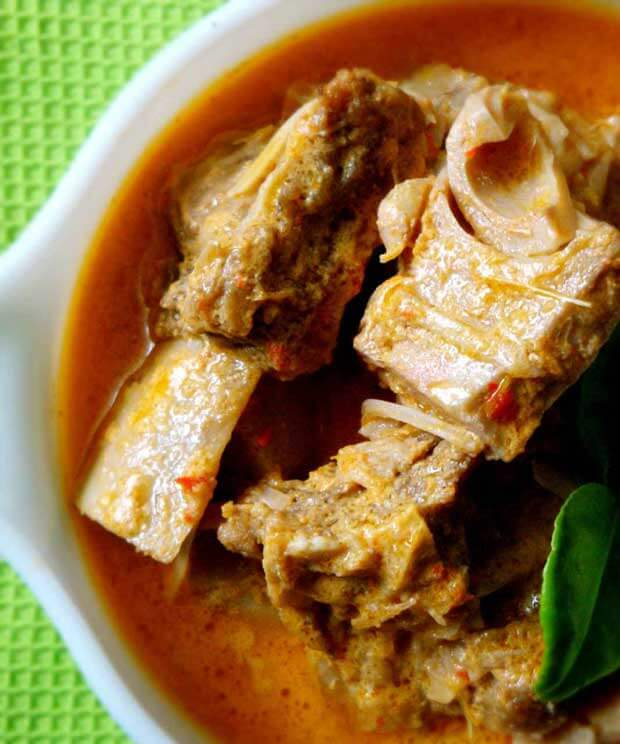

Contact Us
Resep
About Us
Home
Resep Gulai Nangka

Bahan :
500 ml air kaldu daging
350 nangka muda, rebus
150 gr daging sandung lamur, potong-potong
5 lembar daun salam
3 cm lengkuas, memarkan
1 liter santan sedang
Garam secukupnya
1 sdm gula merah
5 buah cabai hijau besar, potong 2 cm
Haluskan :
5 butir bawang merah
1 siung bawang putih
½ sdt biji ketumbar
3 butir kemiri
Cara Membuat :
Langkah 1 : Didihkan air kaldu daging, masukkan nangka, daging sandung lamur, daun salam, lengkuas dan bumbu halus, aduk rata. Masak hingga mendidih.
Langkah 2 : Tuang santan, aduk rata. Tambahkan garam dan gula merah, aduk. Masak hingga air meresap sebagian.
Langkah 3 : Masukkan cabai hijau, aduk rata. Masak sebentar, angkat.